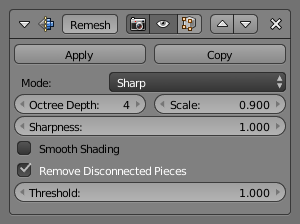

Модифікатор «Перебудова» -- Remesh Modifier¶
Модифікатор «Перебудова» -- Remesh (буквально «повторна сіть») -- це засіб для генерування нової топології для сіті. Вивід відповідає кривині поверхні уводу, але ця топологія міститиме тільки квадрати.
Опції¶

Remesh Modifier panel.
- Режим -- Mode
Існує три базових режими, доступних для модифікатора Remesh: Blocks, Smooth та Sharp.
Вивідна топологія є майже ідентичною між цими трьома режимами; змінюється лише згладження.
- Блоки -- Blocks
- Тут взагалі відсутнє згладження.
- Згладження -- Smooth
- Виводить згладжену поверхню.
- Гостро -- Sharp
- Подіно до Smooth, але зберігає гострі ребра та кутки. Вище на ілюстрації круглий низ та точка верхівки конуса більш точно репродукуються при режимі Sharp.
- Глибина Октадерева -- Octree Depth
- Глибина Октадерева задає роздільність виводу. Нижні значення генеруватимуть більші грані відносно уводу, а вищі значення генеруватимуть більш щільний, густий вивід.
- Масштаб -- Scale
- Результат може підправлятися далі заданням цього Масштабу; нижні значення ефективно зменшують роздільність виводу.
- Гострота -- Sharpness
- Показується при обраному режимі Sharp -- вищі значення продукують ребра більш подібні, як в уводі, тоді як нижчі значення відфільтровують шум.
- Згладжене Відтінення -- Smooth Shading
- Грані виводу будуть мати скоріше згладжене відтінення, а не плоске відтінення. Згладжене/плоске відтінення граней уводу не зберігається.
- Вилучити Від'єднані Частини -- Remove Disconnected Pieces
Відфільтровує малі від'єднані шматки виводу.
- Поріг -- Threshold
- Використовуйте це для керування тим, наскільки малим повинен бути від'єднаний компонент, щоб були вилученим.
Ghi chú
The input mesh should have some thickness to it; if the input is completely flat, add a Solidify Modifier above the Remesh Modifier.
{kind=link}
{kind=link}
{kind=link}
{kind=link}
{kind=link}
{kind=link}
{kind=link}